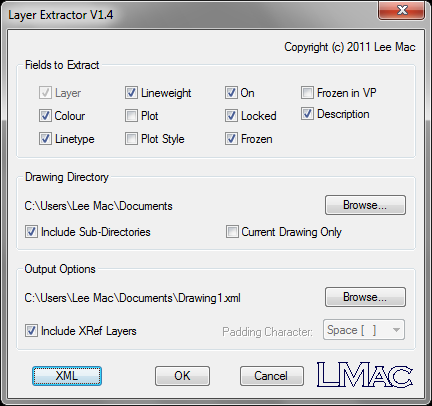
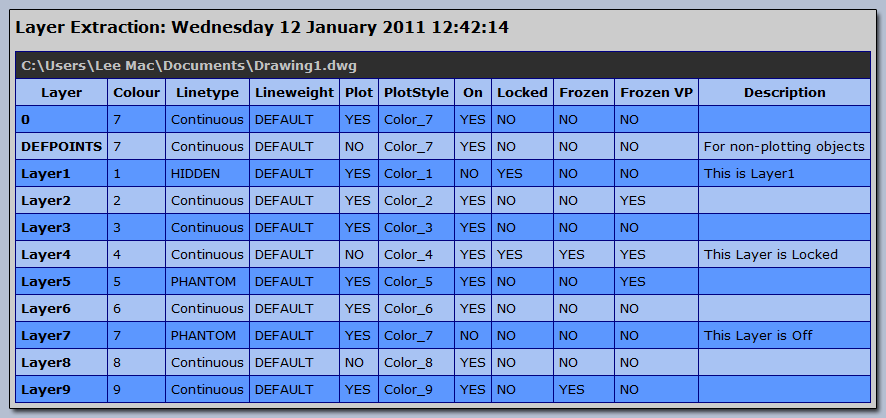

Layer Extractor
This page is delivered for consistency purposes only, as part of the LeeMac sample module of DynALisp, which shows how DynALisp turns existing AutoLISP programs into a module. The program and its description are the work of Lee Mac, who keeps all the credit for them. The original page, with the latest version, is on Lee Mac's website: https://lee-mac.com/layerextract.html
| Function Syntax | LM-LayerExtractor – original syntax: LayerExtract (see aliases) |
| Current Version | 1.4 |
| Compatible with AutoCAD for Mac? | No |
| Compatible with AutoCAD LT? | No |
| Original Page | lee-mac.com/layerextract.html |
Program Description
This program enables a user to generate a report detailing the layer structure within multiple drawings.
The program will extract all or a selection of the following layer properties to a text, CSV or XML file.:
- Name
- Colour
- Linetype
- Lineweight
- Plot status
- Plot Style name
- On/Off status
- Locked/Unlocked status
- Frozen/Thawed status
- Frozen in New Viewports status
- Description
The program uses ObjectDBX to process multiple drawings, hence the user may extract information from several drawings in seconds without having to open a single drawing.
Upon starting the program with LayerExtract at the command line, the user presented with a dialog interface through which the desired fields to be extracted may be selected. The user may also select a directory of drawings to process, and whether subdirectories found within the selected directory are also included. Alternatively, the user may select to extract only those layers in the current working drawing by selecting the Current Drawing Only option.
The user is additionally required to specify an output file to which the data is to be written; this may be a Text file, Comma-Separated Value(CSV) file, or eXtensible Markup Language (XML) file. Should the user choose to extract to a Text File output, the padding character may also be chosen from the drop-down list displayed.
The display of External Reference (XRef) layers in the output file may also be controlled using this interface.
Preview

Should the user choose to write the output to an XML file, additional options are available to control whether the XML file should be compatible with Excel or whether an eXtensible Stylesheet Language (XSL) file is created in the same directory so that the XML data may be transformed into a suitable HTML Table; an example of which is displayed below:
Example of XML Extraction with XSL Stylesheet

The style of this table may be altered by editing the CSS elements in the XSL file following extraction.
Bundled program notes
;;-------------------=={ Layer Extractor }==------------------;;
;; ;;
;; Produces a report detailing the layer structure in every ;;
;; drawing in a selected directory (and subdirectories). ;;
;;------------------------------------------------------------;;
;; Author: Lee Mac, Copyright © 2010 - www.lee-mac.com ;;
;;------------------------------------------------------------;;
;; Version: 1.4 28-04-2011 ;;
;;------------------------------------------------------------;;
Command Names And Aliases
As in every DynALisp module, each program of this sample module has one main command, named LM-*, and the original command names of Lee Mac's page are kept as its aliases: they run the same command, and can be added, renamed or removed in Dyl-Suite (saved in Resources\Aliases.csv).
| Command | Aliases | Name |
|---|---|---|
| LM-LayerExtractor | LX, LAYEREXTRACT | Layer Extractor |